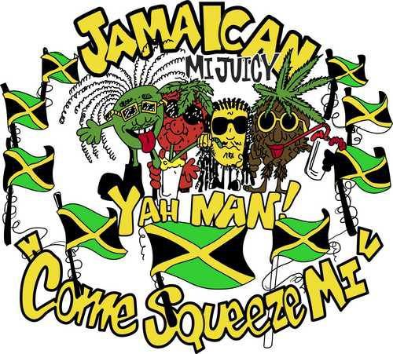

The bean truck serves affordable and tasty meals based on that humble but delicious ingredient: legumes.
Follow us on Twitter!

Where We Be
Upcoming Events
September 26-27: World Meeting of Families (where we will serve our special papal bean and pasta soup Papa e f
Fagioli)October 2-4: Manayunk Food Truck FestivalOctober 7: Gurrellia Food Truck Wednesday at DrexelOctober 9-10: Fairmount Park Truck MeetOctober 17: Conshohocken Brewery Food Truck NightOctober 31: Spooky Food Truck Halloween